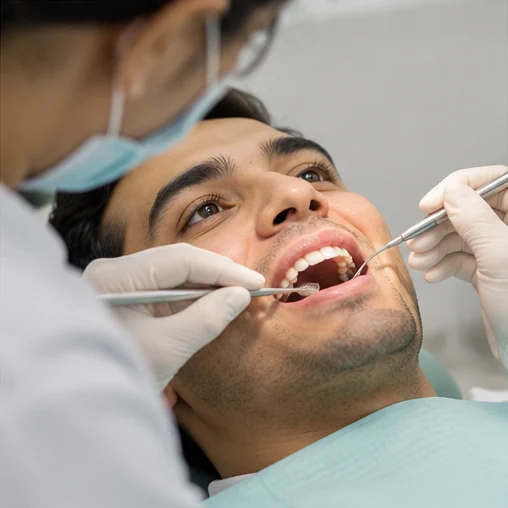

STEP 01
Examination and diagnosis
A dental assessment helps identify whether root canal treatment is appropriate.
These photographs illustrate common dental-care stages. Your actual treatment will depend on a clinical assessment.
A dental assessment helps identify whether root canal treatment is appropriate.

Appropriate instruments and anaesthesia support treatment of the affected tooth.

The tooth may need a filling or crown and follow-up.
Root canal treatment involves removing inflamed or infected pulp tissue, cleaning and shaping the root canal system, and sealing it to help manage infection and preserve the tooth when appropriate.
Modern techniques and appropriate local anaesthesia help manage pain. Some teeth with significant inflammation or infection are harder to anaesthetise, and mild tenderness may occur afterwards.
Depending on the tooth and remaining structure, a permanent filling or crown may be recommended. Follow-up and oral hygiene are important for maintaining the treated tooth.
The number depends on the tooth, complexity and clinical condition.
Many teeth can be preserved, but this depends on damage and other clinical factors.
Facial swelling, fever or worsening pain requires prompt assessment. Breathing or swallowing difficulty requires emergency medical care.
Begin with a consultation to explore the appropriate treatment options.
Book a convenient time to speak with our team about your dental needs.
Complete the form and continue your enquiry on WhatsApp.
Prefer calling? +91 96621 65644